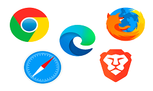
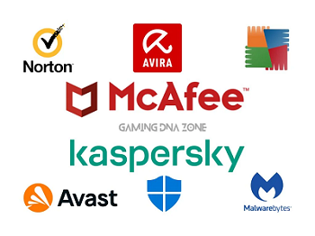

SOFTWARE
Parte Lógica del Computador
CLASIFICACION DEL SOFTWARE
1. Introducción
El software es el conjunto de componentes lógicos
necesarios que hacen posible la realización de tareas específicas en un
sistema computacional. Se divide principalmente en cuatro categorías según su función.
2. Software de sistemas
El software es el conjunto de componentes lógicos necesarios que hacen posible la
realización de tareas específicas en un sistema computacional. Se divide principalmente
en cuatro categorías según su función.
- Función: Gestionar los recursos del hardware
- Ejemplo:
- Sistemas Operativos: Windows, macOS, Linux, Android.
- Controladores de dispositivos (Drivers): Los que permiten que funcione una impresora o tarjeta de video.
- Herramientas de diagnóstico: Como el Administrador de Tareas.
3. Software de Programación
Son las herramientas que utilizan los desarrolladores para crear, depurar y mantener otros programas. Es el
"software para crear software".
- Función: Ofrecer un entorno y lenguajes para que el programador escriba código.
- Ejemplo:
- Editores de texto: Visual Studio Code, Sublime Text.
- Compiladores e Intérpretes: GCC, Python IDLE.
- Entornos de Desarrollo Integrados (IDE): Eclipse, IntelliJ IDEA, Xcode.
4. Software de Aplicación
Es el software con el que el usuario interactúa directamente para realizar una tarea
específica. Es la capa más cercana al usuario final.
- Función: Ayudar al usuario a realizar labores determinadas
- Ejemplo:
- Ofimática: Microsoft Word, Excel, Google Docs.
- Navegadores: Chrome, Firefox, Safari.

- Multimedia: Spotify, Netflix, VLC Player.
- Redes Sociales: WhatsApp, Instagram.
5. Software de Utilería
A menudo se confunde con el de sistema, pero su fin es
realizar tareas de mantenimiento, optimización o protección del sistema operativo.
- Función: Resolver problemas específicos o mejorar el rendimiento del equipo.
- Ejemplo:
- Antivirus: Avast, Norton, Windows Defender.

- Compresores de archivos: WinRAR, 7-Zip.
- Limpiadores: CCleaner.
- Desfragmentadores de disco.